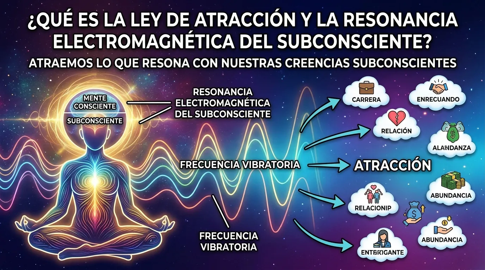

Durante décadas te han vendido la idea simplista de que basta con repetir decretos frente al espejo, pegar recortes de autos de lujo en un tablero de visión o forzarte a "pensar en positivo" las 24 horas del día para remodelar mágicamente tu destino. Sin embargo, si alguna vez has intentado aplicar estos consejos populares con toda tu fe, probablemente te hayas chocado contra la misma pared invisible de frustración, escasez o estancamiento. Para comprender realmente qué es la ley de atracción sin adornos pseudocientíficos ni promesas vacías, debemos despojarla del misticismo superficial y examinar la maquinaria biológica y magnética que gobierna tu existencia.
La ley de atracción no es un deseo mágico ni una fuerza benévola del universo que premia las buenas intenciones. Es un principio de resonancia vibracional implacable e impersonal. En términos simples: no atraes aquello que conscientemente deseas; atraes aquello con lo que estás sincronizado en las profundidades bioeléctricas de tu mente subconsciente. Mientras tu mente consciente intenta decretar riqueza con el 5% de tu capacidad intelectual, tu subconsciente—que opera el 95% restante—sigue emitiendo una señal constante de carencia, duda o autodesvalorización.
En esta guía definitiva, desentrañaremos cómo opera este campo magnético en tu cerebro, por qué los métodos convencionales están diseñados para hacerte fallar y de qué forma la estimulación acústica de alta precisión te permite alinearte con líneas temporales de abundancia y salud en cuestión de minutos.
Cómo Funciona la Ley de Atracción en el Universo Físico y Neuronal
Para entender el mecanismo exacto tras la manifestación real, debemos acudir a la física del campo unificado. Todo lo que te rodea—desde la materia sólida de una mesa hasta un pensamiento fugaz en tu mente—está compuesto por átomos en constante estado de vibración. El cerebro humano opera como una estación emisora y receptora de ondas electromagnéticas. Cada pensamiento que generas produce una frecuencia eléctrica mesurable mediante electroencefalografía , mientras que cada emoción crea un campo magnético medible expandido por el corazón.
Cuando te preguntas qué es la ley de atracción desde un prisma biológico, la respuesta es contundente: es la correspondencia exacta entre el campo electromagnético que emite tu sistema nervioso central y las experiencias externas con las que colisionas en el día a día. Si tu campo bioeléctrico está dominado por el miedo, el sobrepensamiento o el trauma no resuelto, continuarás atrayendo parejas, empleos o deudas que resuenen geométricamente con ese mismo estado energético.
Aquí es donde la inmensa mayoría tropieza al intentar manifestar un cambio. Creen que el pensamiento consciente es suficiente. Desconocen que la mente consciente es sumamente lenta y fácil de engañar, mientras que el subconsciente procesa más de 11 millones de bits de información por segundo de forma ininterrumpida, emitiendo la señal auténtica a la que el campo cuántico responde.
Los 3 Pilares Inquebrantables de la Manifestación Cuántica
Si deseas transformar tu realidad y dejar de repetir los mismos ciclos destructivos, necesitas dominar los tres principios que rigen la sintonización subconsciente:
- 1. Coherencia Cerebro-Corazón: El pensamiento proyecta la dirección eléctrica (la intención), pero es la emoción elevada (gratitud, abundancia, certeza) la que genera la fuerza magnética impulsora. Si piensas en dinero pero sientes ansiedad por pagar las cuentas, la señal resultante es de carencia pura.
- 2. Desactivación de la Rumiación Beta: Tu subconsciente está protegido por el filtro crítico analítico. Mientras permanezcas atascado en frecuencias cerebrales Beta (asociadas al estrés y al control forzado), cualquier afirmación de riqueza o paz rebotará en la superficie de tu mente sin calar en la programación profunda.
- 3. Sintonización de Ondas Theta y Delta: Para reprogramar un archivo en el superordenador bioeléctrico de tu cerebro, debes entrar en un estado de relajación física completa manteniendo la vigilia mental. En las ondas Theta (4 a 8 Hz), los viejos esquemas de escasez son reescritos sin resistencia.
Comprender estos pilares revela por qué la fuerza de voluntad rara vez funciona por sí sola. Si intentas forzar a tu mente a sentir confianza mientras tu cuerpo está saturado de hormonas de estrés, se produce una disonancia neuroquímica que paraliza cualquier avance. Para evitar cometer las equivocaciones más comunes en este proceso, es fundamental identificar los 7 mitos de la ley de atracción que la cultura popular ha difundido equivocadamente.
Por Qué el Pensamiento Positivo Forzado Arruina Tu Frecuencia Vibracional
Uno de los errores más peligrosos al explorar qué es la ley de atracción es reprimir las emociones negativas bajo una capa de positivismo tóxico. Cuando estás atravesando una racha financiera dura o sufriendo por un desamor, forzarte a sonreír y decretar que "todo está perfecto" crea un cortocircuito en tu sistema nervioso.
Tu subconsciente detecta la mentira de inmediato. Sabe que estás aterrado. La brecha entre lo que intentas aparentar y lo que sientes en tus entrañas produce una vibración de incoherencia extrema. Esta disonancia electromagnética es percibida por el entorno como una señal de desesperación, provocando que alejes exactamente lo que buscas atraer.
La verdadera ley de atracción no requiere que finjas emociones que no sientes. Exige que despejes los canales neuronales bloqueados y permitas que tu cuerpo entre en un estado de coherencia armónica espontánea. Y la forma más rápida y precisa de lograrlo no es conversando con la mente lógica, sino estimulando el cerebro a través de ondas sonoras de fase continua.
El Engaño de los Audios Gratuitos: Por Qué los Vídeos de YouTube No Funcionan
Cuando las personas comprenden que el sonido y la frecuencia binaural son los vehículos definitivos para alterar las ondas cerebrales, suelen cometer un error masivo: acuden a YouTube, Spotify o plataformas de streaming gratuito a buscar "música para manifestar dinero" o "frecuencias para sanar". Meses después, descubren que su vida sigue en el mismo lugar.
Existe un motivo técnico inapelable que las plataformas de video no revelan a sus usuarios: **la compresión psicoacústica destruye el efecto binaural**. Plataformas como YouTube o Spotify comprimen agresivamente los archivos de audio utilizando códecs como MP3 o AAC para ahorrar espacio en sus servidores globales. Durante este proceso, los algoritmos recortan las frecuencias extremas y alteran las alineaciones de fase de microsegundos que se encuentran fuera del espectro visible.
Para que ocurra el fenómeno neurológico del arrastre de ondas cerebrales , la diferencia de tono entre el oído izquierdo y el oído derecho debe permanecer matemáticamente perfecta. Si el archivo MP3 está comprimido, las diferencias de fase se difuminan, convirtiendo el audio en un simple fondo musical agradable pero totalmente inútil para la reprogramming subconsciente. Para conocer todos los detalles de esta comparativa de ingeniería de sonido, consulta nuestro estudio exhaustivo sobre audio cuántico vs audios de youtube .
| Parámetro de Calidad | Audios Gratuitos (YouTube / MP3 / AAC) | QuantumAudio® WAV Máster 24-Bit |
|---|---|---|
| Fidelidad de Onda | Compresión Lossy (Frecuencias recortadas) | Espectro Puro HD 100% Sin Compresión |
| Alineación de Fase Binaural | Distorsionada por algoritmos de archivo | Precisión matemática de fase continua |
| Efecto en el Subconsciente | Superficial / Entretenimiento pasivo | Inducción física directa en estados Theta/Delta |
| Exposición a Anuncios | Interrupciones molestas que rompen la onda | Sesión limpia de estimulación ininterrumpida |
Quantum Audio: Reprogramación Subconsciente 100% Pasiva en Alta Definición
Para eliminar la frustración de las meditaciones guiadas complejas y los archivos comprimidos inútiles, se ha desarrollado **Quantum Audio**. Es un activo neuroacústico de precisión diseñado bajo estándares de audio máster WAV de 24 bits, creado con el propósito de guiar a tu sistema nervioso hacia estados de resonancia profunda sin que tengas que realizar el menor esfuerzo consciente.
Olvídate de intentar poner la mente en blanco, pasar horas intentando visualizar o luchar contra los pensamientos intrusivos. La tecnología de Quantum Audio se basa en la **escucha 100% pasiva**. Todo lo que debes hacer es colocarte los audífonos, presionar reproducir y permitir que el espectro sónico de alta definición estimule de manera directa el nervio auditivo, guiando tu cerebro de ondas Beta agitadas hacia ondas Theta y Delta de súper-aprendizaje y manifestación.
Ya sea que tu meta sea desbloquear el flujo financiero, utilizar un sonido milagroso para limpiar la energía negativa del cuerpo o acceder a un efecto mandela deliberado de cambio de realidad, la estimulación acústica de alta fidelidad elimina la resistencia subconsciente en la primera sesión.
⚠️ ADVERTENCIA TÉCNICA: No intentes utilizar QuantumAudio® mientras conduces o realizas operaciones que requieran atención crítica. La inducción en onda máster WAV genera un estado de relajación Theta profundo que desactiva de forma inmediata el estado de alerta Beta.
Preguntas Frecuentes sobre la Ley de Atracción y Reprogramación Sonora
¿Realmente se pueden obtener resultados sin meditar ni practicar visualización?
Sí. La neuroacústica pasiva opera mediante principios físicos y neurobiológicos directos. El oído interno envía estímulos eléctricos al tronco encefálico, sincronizando la actividad bioeléctrica de ambos hemisferios sin necesidad de concentración forzada.
¿Por qué los audios en formato MP3 no logran reprogramar la mente?
Porque el algoritmo de compresión MP3 destruye las diferencias de fase y los armónicos de microfrecuencia indispensables para que el cerebro experimente el fenómeno de arrastre neuronal binaural. Solo los archivos Máster WAV sin compresión mantienen la geometría de onda intacta.
¿Cuánto tiempo toma percibir un cambio en la frecuencia subconsciente?
La respuesta física es inmediata desde los primeros minutos de reproducción pasiva, al reducir los niveles de cortisol y ralentizar la tasa de ondas cerebrales. La consolidación de nuevos patrones subconscientes se fortalece con la escucha continua.
¿Estás listo para dejar de perseguir y comenzar a sintonizar tu realidad?
Entender qué es la ley de atracción es solo el primer paso; el cambio real ocurre cuando permites que tu subconsciente emita la frecuencia magnética correcta. Deja atrás los decretos agotadores y los audios comprimidos de YouTube. Siente la diferencia de la neuroestimulación sónica en alta definición de 24 bits.
OBTENER LA EXPERIENCIA QUANTUMAUDIO® HOY